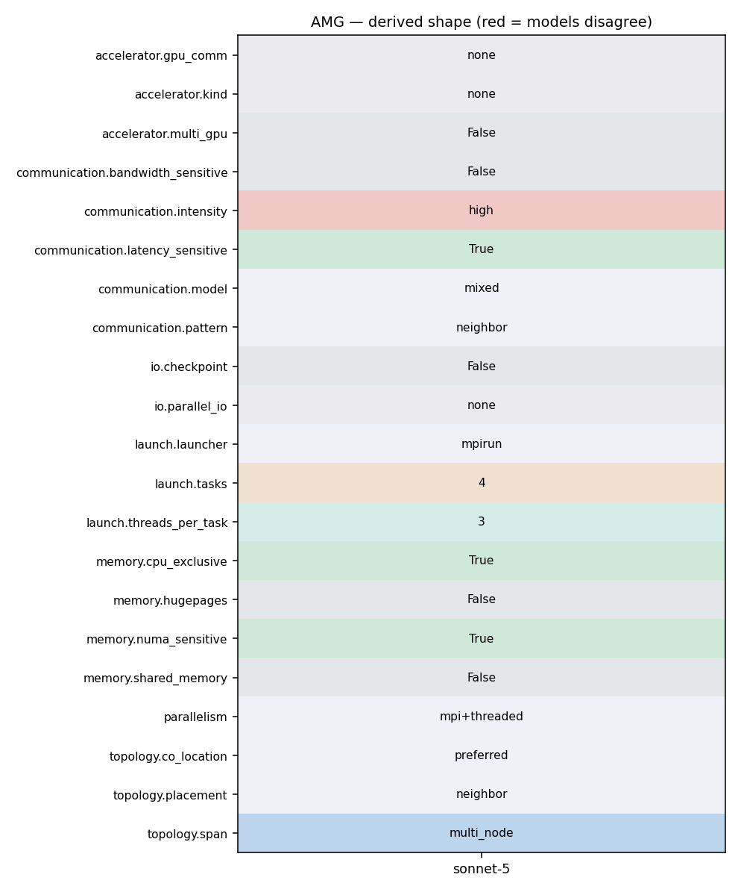

mpirun -np 4 amg -P 2 2 1 -n 50 50 50 -printstats (OMP_NUM_THREADS=3)
76 77 C. Parallelism: 78 79 AMG is a highly synchronous code. The communications and computations 80 patterns exhibit the surface-to-volume relationship common to many parallel 81 scientific codes. Hence, parallel efficiency is largely determined by the size 82 of the data "chunks" mentioned above, and the speed of communications and 83 computations on the machine. AMG is also memory-access bound, doing only 84 about 1-2 computations per memory access, so memory-access speeds will also have 85 a large impact on performance. 86 87 D. Test problems 88
76 77 C. Parallelism: 78 79 AMG is a highly synchronous code. The communications and computations 80 patterns exhibit the surface-to-volume relationship common to many parallel 81 scientific codes. Hence, parallel efficiency is largely determined by the size 82 of the data "chunks" mentioned above, and the speed of communications and 83 computations on the machine. AMG is also memory-access bound, doing only 84 about 1-2 computations per memory access, so memory-access speeds will also have 85 a large impact on performance. 86 87 D. Test problems 88
76 77 C. Parallelism: 78 79 AMG is a highly synchronous code. The communications and computations 80 patterns exhibit the surface-to-volume relationship common to many parallel 81 scientific codes. Hence, parallel efficiency is largely determined by the size 82 of the data "chunks" mentioned above, and the speed of communications and 83 computations on the machine. AMG is also memory-access bound, doing only 84 about 1-2 computations per memory access, so memory-access speeds will also have 85 a large impact on performance. 86 87 D. Test problems 88
316 ip = hypre_ParCSRCommPkgRecvProc(comm_pkg, i); 317 vec_start = hypre_ParCSRCommPkgRecvVecStart(comm_pkg,i); 318 vec_len = hypre_ParCSRCommPkgRecvVecStart(comm_pkg,i+1)-vec_start; 319 hypre_MPI_Irecv(&d_recv_data[vec_start], vec_len, HYPRE_MPI_COMPLEX, 320 ip, 0, comm, &requests[j++]); 321 } 322 for (i = 0; i < num_sends; i++) 323 { 324 vec_start = hypre_ParCSRCommPkgSendMapStart(comm_pkg, i); 325 vec_len = hypre_ParCSRCommPkgSendMapStart(comm_pkg, i+1)-vec_start; 326 ip = hypre_ParCSRCommPkgSendProc(comm_pkg, i); 327 hypre_MPI_Isend(&d_send_data[vec_start], vec_len, HYPRE_MPI_COMPLEX, 328 ip, 0, comm, &requests[j++]); 329 } 330 break;
316 ip = hypre_ParCSRCommPkgRecvProc(comm_pkg, i); 317 vec_start = hypre_ParCSRCommPkgRecvVecStart(comm_pkg,i); 318 vec_len = hypre_ParCSRCommPkgRecvVecStart(comm_pkg,i+1)-vec_start; 319 hypre_MPI_Irecv(&d_recv_data[vec_start], vec_len, HYPRE_MPI_COMPLEX, 320 ip, 0, comm, &requests[j++]); 321 } 322 for (i = 0; i < num_sends; i++)
1152 a_i = hypre_CSRMatrixI(A); 1153 a_j = hypre_CSRMatrixJ(A); 1154 } 1155 hypre_MPI_Bcast(global_data,3,HYPRE_MPI_INT,0,comm); 1156 global_num_rows = global_data[0]; 1157 global_num_cols = global_data[1]; 1158
244 local_num_rows = hypre_CSRMatrixNumRows(diag); 245 246 local_num_nonzeros = diag_i[local_num_rows] + offd_i[local_num_rows]; 247 hypre_MPI_Allreduce(&local_num_nonzeros, &total_num_nonzeros, 1, HYPRE_MPI_INT, 248 hypre_MPI_SUM, comm); 249 hypre_ParCSRMatrixNumNonzeros(matrix) = total_num_nonzeros; 250 return hypre_error_flag;
316 ip = hypre_ParCSRCommPkgRecvProc(comm_pkg, i); 317 vec_start = hypre_ParCSRCommPkgRecvVecStart(comm_pkg,i); 318 vec_len = hypre_ParCSRCommPkgRecvVecStart(comm_pkg,i+1)-vec_start; 319 hypre_MPI_Irecv(&d_recv_data[vec_start], vec_len, HYPRE_MPI_COMPLEX, 320 ip, 0, comm, &requests[j++]); 321 } 322 for (i = 0; i < num_sends; i++)
324 vec_start = hypre_ParCSRCommPkgSendMapStart(comm_pkg, i); 325 vec_len = hypre_ParCSRCommPkgSendMapStart(comm_pkg, i+1)-vec_start; 326 ip = hypre_ParCSRCommPkgSendProc(comm_pkg, i); 327 hypre_MPI_Isend(&d_send_data[vec_start], vec_len, HYPRE_MPI_COMPLEX, 328 ip, 0, comm, &requests[j++]); 329 } 330 break;
243 { 244 if (hypre_ParCSRCommHandleNumRequests(comm_handle) > 0) 245 { 246 HYPRE_Int ret = hypre_MPI_Waitall(hypre_ParCSRCommHandleNumRequests(comm_handle), 247 hypre_ParCSRCommHandleRequests(comm_handle), 248 hypre_MPI_STATUSES_IGNORE); 249 if (hypre_MPI_SUCCESS != ret)
2297 HYPRE_Int *row_nums; 2298 HYPRE_Int *col_nums; 2299 HYPRE_Real *data; 2300 2301 HYPRE_IJMatrixGetLocalRange(ij_A, &first_row, &last_row, &first_col, &last_col); 2302 2303 local_size = last_row-first_row+1; 2304 num_cols = hypre_CTAlloc(HYPRE_Int, local_size); 2305 row_nums = hypre_CTAlloc(HYPRE_Int, local_size); 2306 col_nums = hypre_CTAlloc(HYPRE_Int, local_size); 2307 data = hypre_CTAlloc(HYPRE_Real, local_size); 2308 2309 #ifdef HYPRE_USING_OPENMP 2310 #pragma omp parallel for private(i) HYPRE_SMP_SCHEDULE 2311 #endif 2312 for (i=0; i < local_size; i++) 2313 { 2314 num_cols[i] = 1; 2315 row_nums[i] = first_row+i; 2316 col_nums[i] = first_row+i; 2317 data[i] = eps; 2318 } 2319 2320 if (action) 2321 HYPRE_IJMatrixAddToValues(ij_A, local_size, num_cols, row_nums, 2322 col_nums, data); 2323 else 2324 HYPRE_IJMatrixSetValues(ij_A, local_size, num_cols, row_nums, 2325 col_nums, data); 2326 2327 HYPRE_IJMatrixAssemble(ij_A); 2328 return(0); 2329 } 2330 2331 HYPRE_Int 2332 hypre_map27( HYPRE_Int ix, 2333 HYPRE_Int iy, 2334 HYPRE_Int iz, 2335 HYPRE_Int px, 2336 HYPRE_Int py, 2337 HYPRE_Int pz,
263 %========================================================================== 264 %========================================================================== 265 266 About the Data 267 268 AMG generates its own linear system, the size of which can be controlled from 269 the command line. 270 271 %========================================================================== 272 %==========================================================================
200 The driver for AMG is called `amg', and is located in the amg/test 201 subdirectory. Type 202 203 mpirun -np 1 amg -help 204 205 to get usage information. This prints out the following: 206
277 -DHYPRE_USING_OPENMP -DHYPRE_HOPSCOTCH -DHYPRE_USING_PERSISTENT_COMM -DHYPRE_BIGINT 278 linking with OpenMP and setting OMP_NUM_THREADS to 3: 279 280 mpirun -np 4 amg -P 2 2 1 -n 50 50 50 -printstats 281 282 This is what AMG prints out: 283
277 -DHYPRE_USING_OPENMP -DHYPRE_HOPSCOTCH -DHYPRE_USING_PERSISTENT_COMM -DHYPRE_BIGINT 278 linking with OpenMP and setting OMP_NUM_THREADS to 3: 279 280 mpirun -np 4 amg -P 2 2 1 -n 50 50 50 -printstats 281 282 This is what AMG prints out: 283
275 276 Consider the following run, which was compiled using options -DTIMER_USE_MPI 277 -DHYPRE_USING_OPENMP -DHYPRE_HOPSCOTCH -DHYPRE_USING_PERSISTENT_COMM -DHYPRE_BIGINT 278 linking with OpenMP and setting OMP_NUM_THREADS to 3: 279 280 mpirun -np 4 amg -P 2 2 1 -n 50 50 50 -printstats 281
188 32x32x32 32768 17.55 65.19 189 64x32x32 65536 17.49 64.93 190 191 These results were obtained on BG/Q using MPI and OpenMP with 4 OpenMP 192 threads per MPI task and additional options -DYPRE_HOPSCOTCH 193 -DHYPRE_USING_PERSISTENT_COMM and -DHYPRE-BIGINT . 194 195 %========================================================================== 196 %==========================================================================
43 #INCLUDE_CFLAGS = -g -DTIMER_USE_MPI 44 #INCLUDE_CFLAGS = -g -DTIMER_USE_MPI -DHYPRE_USING_OPENMP 45 #INCLUDE_CFLAGS = -O2 -DTIMER_USE_MPI -DHYPRE_USING_OPENMP -DHYPRE_BIGINT -fopenmp 46 INCLUDE_CFLAGS = -O2 -DTIMER_USE_MPI -DHYPRE_USING_OPENMP -fopenmp -DHYPRE_HOPSCOTCH -DHYPRE_USING_PERSISTENT_COMM -DHYPRE_BIGINT 47 #INCLUDE_CFLAGS = -O2 -DTIMER_USE_MPI -DHYPRE_USING_OPENMP -qsmp=omp -qmaxmem=-1 -DHYPRE_HOPSCOTCH -DHYPRE_USING_PERSISTENT_COMM -DHYPRE_BIGINT 48 49 # set link flags here
60 The driver provided with AMG builds linear systems for various 61 3-dimensional problems, which are described in Section D. 62 63 To determine when the solver has converged, the driver uses the 64 relative-residual stopping criteria, 65 66 ||r_k||_2 / ||b||_2 < tol 67
80 patterns exhibit the surface-to-volume relationship common to many parallel 81 scientific codes. Hence, parallel efficiency is largely determined by the size 82 of the data "chunks" mentioned above, and the speed of communications and 83 computations on the machine. AMG is also memory-access bound, doing only 84 about 1-2 computations per memory access, so memory-access speeds will also have 85 a large impact on performance. 86 87 D. Test problems 88
43 #INCLUDE_CFLAGS = -g -DTIMER_USE_MPI 44 #INCLUDE_CFLAGS = -g -DTIMER_USE_MPI -DHYPRE_USING_OPENMP 45 #INCLUDE_CFLAGS = -O2 -DTIMER_USE_MPI -DHYPRE_USING_OPENMP -DHYPRE_BIGINT -fopenmp 46 INCLUDE_CFLAGS = -O2 -DTIMER_USE_MPI -DHYPRE_USING_OPENMP -fopenmp -DHYPRE_HOPSCOTCH -DHYPRE_USING_PERSISTENT_COMM -DHYPRE_BIGINT 47 #INCLUDE_CFLAGS = -O2 -DTIMER_USE_MPI -DHYPRE_USING_OPENMP -qsmp=omp -qmaxmem=-1 -DHYPRE_HOPSCOTCH -DHYPRE_USING_PERSISTENT_COMM -DHYPRE_BIGINT 48 49 # set link flags here
1 /*BHEADER********************************************************************** 2 * Copyright (c) 2017, Lawrence Livermore National Security, LLC. 3 * Produced at the Lawrence Livermore National Laboratory. 4 * Written by Ulrike Yang (yang11@llnl.gov) et al. CODE-LLNL-738-322.
25 26 AMG is a parallel algebraic multigrid solver for linear systems arising from 27 problems on unstructured grids. 28 29 See the following papers for details on the algorithm and its parallel 30 implementation/performance: 31
43 #INCLUDE_CFLAGS = -g -DTIMER_USE_MPI 44 #INCLUDE_CFLAGS = -g -DTIMER_USE_MPI -DHYPRE_USING_OPENMP 45 #INCLUDE_CFLAGS = -O2 -DTIMER_USE_MPI -DHYPRE_USING_OPENMP -DHYPRE_BIGINT -fopenmp 46 INCLUDE_CFLAGS = -O2 -DTIMER_USE_MPI -DHYPRE_USING_OPENMP -fopenmp -DHYPRE_HOPSCOTCH -DHYPRE_USING_PERSISTENT_COMM -DHYPRE_BIGINT 47 #INCLUDE_CFLAGS = -O2 -DTIMER_USE_MPI -DHYPRE_USING_OPENMP -qsmp=omp -qmaxmem=-1 -DHYPRE_HOPSCOTCH -DHYPRE_USING_PERSISTENT_COMM -DHYPRE_BIGINT 48 49 # set link flags here
757 Cy = nxy*(P*nz-1); 758 Cz = local_size*(P*Q-1); 759 #ifdef HYPRE_USING_OPENMP 760 #pragma omp parallel 761 #endif 762 { 763 HYPRE_Int ix, iy, iz;
76 77 C. Parallelism: 78 79 AMG is a highly synchronous code. The communications and computations 80 patterns exhibit the surface-to-volume relationship common to many parallel 81 scientific codes. Hence, parallel efficiency is largely determined by the size 82 of the data "chunks" mentioned above, and the speed of communications and 83 computations on the machine. AMG is also memory-access bound, doing only 84 about 1-2 computations per memory access, so memory-access speeds will also have 85 a large impact on performance. 86 87 D. Test problems 88
163 164 Parallelism and Scalability Expectations 165 166 Previous versions of AMG have been run on the following platforms: 167 168 BG/Q - up to over 1,000,000 MPI processes 169 BG/P - up to 125,000 MPI processes 170 and more 171 172 Consider increasing both problem size and number of processors in tandem. 173 On scalable architectures, time-to-solution for AMG will initially 174 increase, then it will level off at a modest numbers of processors, 175 remaining roughly constant for larger numbers of processors. Iteration 176 counts will also increase slightly for small to modest sized problems, 177 then level off at a roughly constant number for larger problem sizes. 178 179 For example, we get the following timing results (in seconds) for a system 180 with a 3D 27-point stencil, distributed on a logical P x Q x R processor 181 topology, with fixed local problem size per process given as 96 x 96 x 96: 182 183 P x Q x R procs setup time solve time 184 --------------------------------------------------------------- 185 8x 8x 8 512 14.91 51.05 186 16x16x 8 2048 15.31 53.35 187 32x16x16 8192 16.00 57.78 188 32x32x32 32768 17.55 65.19 189 64x32x32 65536 17.49 64.93 190 191 These results were obtained on BG/Q using MPI and OpenMP with 4 OpenMP 192 threads per MPI task and additional options -DYPRE_HOPSCOTCH 193 -DHYPRE_USING_PERSISTENT_COMM and -DHYPRE-BIGINT . 194 195 %========================================================================== 196 %==========================================================================